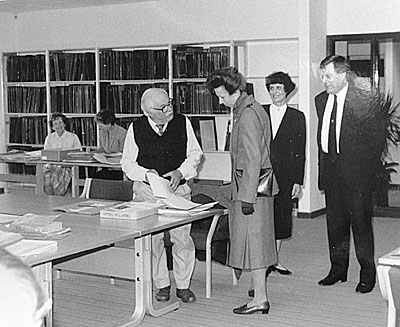

All about our archives
By way of background, which includes useful detail, the Northampton Record Office (NRO) holds about 5000 Grafton Estate documents that anyone can peruse - given time and patience. Sue Blake of Grafton Regis has altruistically generated a Grafton CD-set using this material and is presently engaged in providing an on-line catalogue at www.grafton-regis.co.uk that eventually will save everyone much time in their searches. George Freeston, in his pre-internet era, probably read all the material relevant to the village and added his own records from talking to the older folk. He had a reputation for ‘owning his chair’ at the photocopying machine at Delapre Abbey, before the NRO had moved to Wootton Hall Park (next to the Fire Service headquarters). He generated a “scrapbook” in 1953 which resides with Jane Frost in the village. It is available for perusal. George lodged some 27 boxes of notes in the NRO in 1996. They are available but have only been partly sorted by George himself. Although copying and photography are permitted, they can only be studied under the supervision of an assistant archivist. There is a website which presents nearly all the images from that collection - this one!
After George passed on in 2002 there were some 40 further boxes containing notes, maps, photocopies, unique photographs and audio tapes that were similarly lodged in the NRO for safety’s sake. These have now been sorted by the Heritage Society and reduced to 25 boxes. They may be examined at the Northamptonshire Record Office on the same basis as the 1996 collection, ie. under the supervision of an assistant archivist. An index is essential and that can be viewed here. For full details including the Record Office opening hours and information on planning a visit please click the link: www.northamptonshire.gov.uk This will take you to the main Northamptonshire County Council site. Then click Community and Living which will bring up a list of options including Record Office. Alternatively please contact the Northamptonshire Record Office at Wootton Hall Park, Mereway, Northampton NN4 8BQ. Telephone 01604 762129, email: archivist@northamptonshire.gov.uk.
A further caution, some folders are 'scanty' and you may only find what you want 'by accident'. There is a certain amount of historical material pertaining to the school, the chapel and the church which are either kept on those premises respectively or transferred to the NRO. Finally there is a certain amount of miscellaneous material kept in various village houses (mine for one) - material which, as an aspect of maintaining records, is being carefully indexed, packaged and, where appropriate, recorded photographically.

Princess Margaret at the formal opening of the N.R.O.
George very much in the frame!